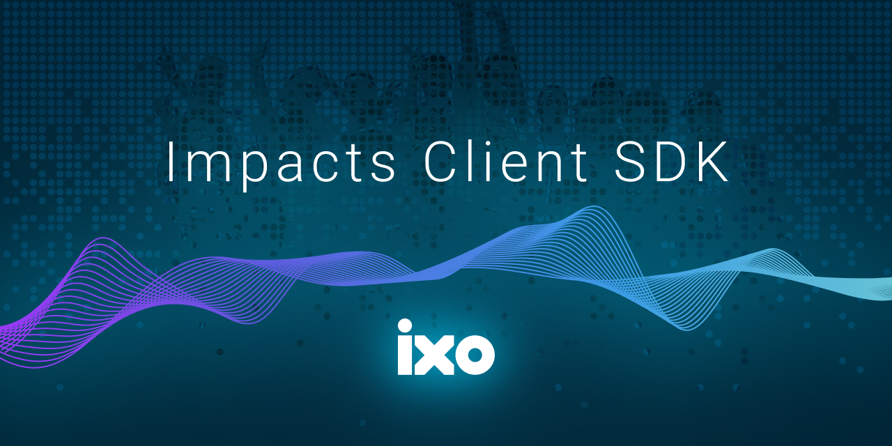

@ixo/impactxclient-sdk
IXO Impacts Client SDK

@ixo/impactxclient-sdk


The ultimate utility client for the IXO Blockchain
The IXO Impacts Client SDK @ixo/impactxclient-sdk is a type-safe TypeScript SDK for Javascript developers.
It is compatible with most Javascript frameworks, including React, React Native, Vue.js, and Node.js.
The Impacts Client SDK is designed to interact with the IXO blockchain and other Cosmos appchains. It provides a comprehensive set of tools to query a Cosmos blockchain, form messages, and sign transactions. The SDK also supports interchain communication and smart contract interactions.
The Impacts Client SDK provides support for both ESM (ECMAScript Modules) and CJS (CommonJS).
Table of Contents
- The ultimate utility client for the IXO Blockchain
Key Features
- Easy-to-use API for querying and transacting with the IXO blockchain
- Wallet integration for secure transactions
- Custom queries to simplify complex queries
- Support for smart contracts
- Integrates interchain communications
- Supports multiple Cosmos chains
API
- Query Client
- Signing Client
- Blockchain Modules
- Smart Contracts
- Inter-Blockchain Communication
- Utility Functions
Getting Started
Prerequisites
Installation
npm install @ixo/multiclient-sdk
or
yarn add @ixo/multiclient-sdk
Usage
The Query Client and Signing Client provide simple interfaces to abstract away the complexity of querying data on the IXO blockchain and signing messages for broadcasting to the IXO blockchain. These clients also work for other Cosmos appchains.
Utility Functions
./utils
Import the utils object from @ixo/impactxclient-sdk to destructure utlity functions to help with using this SDK.
import { utils } from "@ixo/impactxclient-sdk";
const conversionUtils = utils.conversions;
const didUtils = utils.did;
const mnemonicUtils = utils.mnemonic;
const addressUtils = utils.address;
RPC Client
First connect to an RPC Client in order to interact with a blockchain; in this case the IXO blockchain.
The Cosmos Chain Resolver SDK, created by IXO, provides a simple way to retrieve RPC endpoints for any Cosmos chain.
We added a custom Query Client that includes the Cosmos modules and IXO modules, as well as Custom Queries.
Remember to set the RPC_ENDPOINT environment variable.
- Published
RPC_ENDPOINTproviders can be found at the Cosmos Chain Registry Github repository for Mainnet. - Testnet providers are found here.
- Providers for Devnet are found here.
Example that describes how to set up your queryClient with an RPC endpoint.
import { ixo, createQueryClient } from "@ixo/impactxclient-sdk";
const queryClient = await createQueryClient(RPC_ENDPOINT);
Query Client
IXO created a custom QueryClient to facilitate queries to the cosmos and ixo modules, as well as to provide Custom Queries.
First connect to an RPC client.
Example code snippet assuming that the queryClient has been initialised with an RPC endpoint.
import { ixo, createQueryClient } from "@ixo/impactxclient-sdk";
const queryClient = await createQueryClient(RPC_ENDPOINT);
// Example of querying the Cosmos Bank module for the balances of an account on the IXO blockchain
const balance = await client.cosmos.bank.v1beta1.allBalances({
address: "ixo1addresshere",
});
// Example of querying the IXO Entity module for all entities on the IXO blockchain
const entities = await queryClient.ixo.entity.v1beta1.entityList();
Custom Queries
Import the customQueries object from @ixo/impactxclient-sdk. Use the object to destructure currency functions that will allow you to get the token info based on the provided denom or the contract functions that will provide ixo or daodao contract codes for instantiation.
Example of custom queries.
import { customQueries } from "@ixo/impactxclient-sdk";
// get token info based on denom (coinMinimalDenom)
const token = customQueries.currency.findTokenFromDenom("uixo");
// get ibc token info based on ibc hash (and instantiated query client)
const ibcToken = await customQueries.currency.findIbcTokenFromHash(
queryClient,
"ibc/u05AC4BBA78C5951339A47DD1BC1E7FC922A9311DF81C85745B1C162F516FF2F1"
);
// `findIbcTokensFromHashes` requires an array of hashes to fetch multiple ibc token infos
// get coincodex info for a coin
const coinCodexInfo = customQueries.currency.findTokenInfoFromDenom("ixo");
// `findTokensInfoFromDenoms` requires an array of denoms to fetch multiple coinCodex infos
// get daodao contract codes (for devnet) to instatiate
const contractCodes = customQueries.contract.getContractCodes(
"devnet",
"daodao"
); // contractCodes = [{ name: "dao_core", code: 3 }, ...];
const { code } = contractCodes.find((contract) => contract.name === "dao_core");
// get specific contract code (for testnet) to instantiate
const daoCoreContractCode = customQueries.contract.getContractCode(
"testnet",
"dao_core"
);
Signing Client
A message to the IXO blockchain requires three steps:
See Note
IXO has developed an improved signing client named SignX that interacts seamlessly with the Impacts X mobile app. Read more about how to utilise the SignX client instead of using this SigningClient.
Composing Messages
The following example describes one type of message. Reference the __tests__ directory of this repository for further examples of most messages and how to format them.
import { ixo } from "@ixo/impactxclient-sdk";
const message = {
typeUrl: "/ixo.iid.v1beta1.MsgCreateIidDocument",
value: ixo.iid.v1beta1.MsgCreateIidDocument.fromPartial({
id: did,
verifications: [
ixo.iid.v1beta1.Verification.fromPartial({
relationships: ["authentication"],
method: ixo.iid.v1beta1.VerificationMethod.fromPartial({
id: did,
type: "EcdsaSecp256k1VerificationKey2019",
publicKeyMultibase: "F" + toHex(pubkey),
controller: controller,
}),
}),
],
signer: address,
controllers: [did],
}),
};
Composing IBC Messages
Reference Composing Messages for information about composing messages in general.
./codegen/ibc/bundle
import { ibc } from "@ixo/impactxclient-sdk";
Signing Messages
Here are the docs on creating signers in cosmos-kit that can be used with Keplr and other wallets.
Initializing the Stargate Client
IXO added a custom Stargate Signing Client that can be exported and is creatable under createSigningClient.
Note
It only supports Direct Proto signing through the RPC endpoint. It already has all the proto defininitions in the registry for IXO blockchain modules.
import { createSigningClient } from "@ixo/impactxclient-sdk";
const signingClient = await createSigningClient(RPC_URL, offlineWallet);
Note
The following, named
getSigningixoClient, is an alternative tocreateSigningClient.
Use getSigningixoClient to get your SigningStargateClient, with the proto/amino messages full-loaded.
There is no need to manually add amino types, just import and initialize the client:
import { getSigningixoClient } from "@ixo/impactxclient-sdk";
const stargateClient = await getSigningixoClient({
rpcEndpoint,
signer, // OfflineSigner
});
Creating Signers
To broadcast messages, you can create signers with a variety of options:
- cosmos-kit (recommended)
- keplr
- cosmjs
Proto Signer
import { getOfflineSignerProto as getOfflineSigner } from "cosmjs-utils";
Amino Signer Note
The SDK currently does not include amino types. Use the Proto Signer for now.
import { getOfflineSignerAmino as getOfflineSigner } from "cosmjs-utils";
Once the Signer type has been imported, the signer can be created.
WARNING
It is not recommended to write your mnemonic, also known as seed phrase, in plain text. The example below is only for illustration and has no balances. Please take care of your security and use best practices such as AES encryption and/or methods from 12factor applications.
import { chains } from "chain-registry";
const mnemonic =
"unfold client turtles either pilots stocks floors glow toward bullets cars science";
const chain = chains.find(({ chain_name }) => chain_name === "ixo");
const signer = await getOfflineSigner({
mnemonic,
chain,
});
Broadcasting Messages
Now that you have your stargateClient, you can broadcast messages that were composed as described in Composing Messages.
This example demonstrates broadcasting the /cosmos.bank.v1beta1.MsgSend message.
const msg = send({
amount: [
{
denom: "coin",
amount: "1000",
},
],
toAddress: address,
fromAddress: address,
});
const fee: StdFee = {
amount: [
{
denom: "coin",
amount: "864",
},
],
gas: "86364",
};
const response = await stargateClient.signAndBroadcast(address, [msg], fee);
Blockchain Modules
IXO Modules
Available at the IXO Blockchain repository.
See potential use cases that may be applicable to your application.
./codegen/ixo/bundle.d.ts
IIDs
The IID (Interchain Identifier) Module establishes a decentralized identity mechanism, ensuring a standardized approach for all entities within the system. By harnessing the power of DIDs (Decentralized Identifiers) and IIDs, this module facilitates a robust, secure, and universally recognizable identity framework, paving the way for a seamless integration across various platforms and networks.
./codegen/ixo/iid/v1beta1/query./codegen/ixo/iid/v1beta1/tx
Entities
The Entity Module introduces a holistic approach to NFT-backed identities, bridging the gap between decentralized identifiers and tangible assets. Upon entity creation, a symbiotic relationship forms between an IID Document, an NFT, and the Entity's metadata. Further enriched with the concept of Entity Accounts, this module ensures a seamless transition of ownership, while offering a robust framework for entities to operate within a decentralized landscape.
./codegen/ixo/entity/v1beta1/query./codegen/ixo/entity/v1beta1/tx
Tokens
Embracing the versatility of the EIP-1155 standard, the Token Module offers a sophisticated mechanism for managing multi-token smart contracts. Whether you're dealing with fungible or non-fungible tokens, this module streamlines the process of creation, minting, and management. From defining token collections to ensuring transparent on-chain token attributes, the Token Module stands as a beacon of efficiency and flexibility in the decentralized token ecosystem.
./codegen/ixo/token/v1beta1/query./codegen/ixo/token/v1beta1/tx
Claims
The Claims Module provides an advanced structure for handling Verifiable Claims (VCs), cryptographic attestations regarding a subject. By aligning with the W3C standard and incorporating unique IXO system identifiers, this module offers a comprehensive solution for creating, evaluating, and managing claims. It enables entities to define protocols, authorize agents, and maintain a verifiable registry, ensuring authenticity and transparency in all claim-related processes.
./codegen/ixo/claims/v1beta1/query./codegen/ixo/claims/v1beta1/tx
Bonds
The Bonds Module provides universal token bonding curve functions to mint, burn or swap any token in a Cosmos blockchain.
./codegen/ixo/bonds/v1beta1/query./codegen/ixo/bonds/v1beta1/tx
Cosmos Modules
Available at the Cosmos SDK repository. View the examples provided by the Cosmos SDK team.
./codegen/contracts./codegen/cosmos/bundle./codegen/cosmwasm/bundle./codegen/ibc/bundle./codegen/ica/bundle./codegen/ics23/bundle./codegen/tendermint/bundle
Smart Contracts
In order to instantiate and execute smart contracts on the IXO blockchain, messages on the wasm module have to be invoked. The wasm message contains the smart contract details and the message to execute.
CosmWasm
Available at the CosmWasm module repository.
./codegen/cosmwasm/bundle
There are a few steps to follow when working with a CosmWasm smart contract.
Instantiation is only required when the contract is not available on the chain instance that you are working with.
- See note above. Only instantiate an instance of the contract, if needed.
- Retrieve the contract code for your target smart contract.
- Contract code is provided by the contract namespace in custom queries.
./custom_queries/contract
- Create the message to Execute on the contract.
- Execute the message on the contract by signing it.
Here is an example code snippet that shows how to instantiate and execute messages on a contract using the ixo1155 contract code:
import { createSigningClient, customQueries, cosmwasm, cosmos } from '@ixo/impactxclient-sdk';
/*
// Create a signing client in order to sign messages.
// Retrieve the Account Address for the connected user account.
*/
const client = await createSigningClient(rpc, offlineSigner);
const account = {};
const myAddress = account.address;
/*
// NB: Instantiation is only required when the contract is not available on the chain instance that you are working with.
// 1. Create the instantiation message for the contract.
// - Retrieve the Code for this contract (using ixo1155 for this example).
// - Remember to provide 1 uixo as message funding.
// 2. Sign the message and broadcast it to the IXO blockchain.
// - The most important part of this response is the Contract Address.
// - It is required for all further interactions with the contract.
*/
const contractCodes = customQueries.contract.getContractCodes('devnet', 'ixo');
const contractCode = contractCodes.find((contract) => contract.name === 'ixo1155');
const instantiateContractMessage = {
typeUrl: '/cosmwasm.wasm.v1.MsgInstantiateContract',
value: cosmwasm.wasm.v1.MsgInstantiateContract.fromPartial({
admin: myAddress,
codeId: contractCode.code,
funds: [
cosmos.base.v1beta1.Coin.fromPartial({
amount: '1',
denom: 'uixo',
}),
],
label: account.did + 'contract' + contractCode.code,
msg: new Uint8Array(Buffer.from(JSON.stringify({
minter: myAddress
}))),
sender: myAddress,
}),
};
const instantiateContractResponse = await client.signAndBroadcast(
myAddress,
[instantiateContractMessage],
"auto"
);
const contractAddress = JSON.parse(instantiateContractResponse.rawLog!)[0]
.events
.instantiate
.attributes
._contract_address
.value;
/*
// Execute messages on the contract with these steps:
// 1. All contract messages need to be wrapped in the /cosmwasm.wasm.v1.MsgExecuteContract blockchain message.
// - Remember to provide 1 uixo as message funding.
// 2. Create the message that you want to execute on the contract and include it in the msg field.
// - This example executes the batch_mint message.
// 3. Sign the message and broadcast it to the IXO blockchain.
// - A successful message execution means that the transaction was completed.
*/
// tokenId is an example in this case to support the batch_mint contract message.
const tokenId = 'CARBON:bafybeib22s3lyz3guicawoboeieltpyewkdnuuheklpeu3zbrwekmpdew5';
const executeContractMessage = {
typeUrl: '/cosmwasm.wasm.v1.MsgExecuteContract',
value: cosmwasm.wasm.v1.MsgExecuteContract.fromPartial({
contract: contractAddress,
funds: [
cosmos.base.v1beta1.Coin.fromPartial({
amount: '1',
denom: 'uixo',
}),
],
msg: new Uint8Array(Buffer.from(JSON.stringify({
batch_mint: {
to: myAddress,
batch: [[tokenId, '5000', 'uri']],
},
}))),
sender: myAddress,
}),
};
const executeContractResponse = await client.signAndBroadcast(
myAddress,
[executeContractMessage],
"auto"
);
Swap Contract
IXO developed a smart contract named ixoSwap to enable swapping of tokens on the IXO network. Read more about the contract in the Swimm documentation. The contract has been audited by an independent party.
Examples of how to use the ixoSwap contract are available here:
- View implementation examples in the
__tests__directory of this repository. - Another working example is available at the Jambo repository in this branch.
DAODAO Contracts
The basic DAO contracts are forked from the DAO-DAO Github organisation's dao-contracts repository.
IXO has implemented the contracts in an innovative manner and this implementation is generally available as DAO Tooling in the Impacts Portal.
Examples of how to use DAODAO Contracts can be found here.
See potential use cases that may be applicable to your application.
Notes
React Native
Install the below Library and import into your main app entry file. This ensures the required Polyfils are covered on mobile.
yarn add @walletconnect/react-native-compat
BigInt React Native
To ensure no issues with the React Native bigInt implementation, be sure to wrap your decimal gas amounts and others in a JS Double.
Attributions
Types were generated from the *.proto files of the IXO appchain using the @osmonauts/telescope@0.92.2 package.
See
@ixo/impactxclient-sdk/types/index.d.tsfor the complete list of types.
How to contribute to the Impacts Client SDK
IXO welcomes contributions and comments of all kinds!
First off, thank you for applying your mind and time to improving this repo - it helps the Internet of Impacts to save our planet! Whether you are contributing in your own space-time or following a bounty; we are grateful!
- Fork the repo.
- Ensure that you sync the fork often.
- Clone your fork and create a branch.
- Implement your changes one at a time and commit regularly to your fork.
- Once your change is completed and passes all of the local tests, create a PR.
- Your change will be reviewed as soon as possible with helpful feedback for your further updates to the change.
- Finally, when everything is good to go and your PR approved, you can squash and merge your branch.
Set up your local environment
Clone the repository. After successfully cloning:
yarn
yarn build
Codegen
Contract schemas live in ./contracts, and protos in ./proto. Look inside of scripts/codegen.js and configure the settings for bundling your SDK and contracts into ixo-multiclient-sdk:
yarn codegen
Publishing
Build the types and then publish:
yarn build:ts
yarn publish
License
This SDK is licensed under the Apache 2 License. See the LICENSE file for more information.